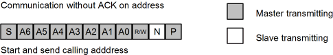
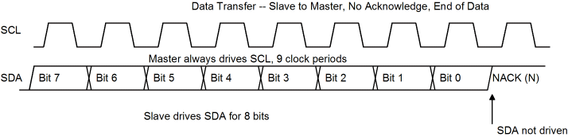

| Previous Section | Next Section | Index | Questions | Search the Text |
The Inter-Integrated Circuit bus was developed by Philips in the 1980s as a low cost interconnection bus. Commonly known as I2C (which is a trademark), the IIC bus is one of the most popular buses for interfacing to microcontrollers.
The IIC bus is a multi-master bus which uses two signal lines (clock and data) connected to all the devices on the bus, using a wired-or connection on both lines among all the devices. A clever contention detection scheme prevents any lost time if two or more masters request the bus simultaneously. The original specification called for a 100,000 bits/second transfer rate with up to 127 devices, however later modifications extended both the transfer rate and the maximum number of devices. We will only be concerned with the original base-line specification here.
When the bus is idle, any master device can obtain control of the bus by sending a start signal (denoted by S in the figure below). The master then sends 8 clock pulses with seven address bits and a read/not write bit indicated if the master will be sending data (write) or receiving data (read) from the slave. The master sends an additional clock pulse during which time the addressed slave indicates it is active and ready by pulling the SDA data line low. If the slave doesn't exist or is not ready, no acknowledgement is given (indicated by N in the figure below) and the master then transmits a stop signal (indicated by P in the figure) which relinquishes the bus.

If a slave acknowledges the address (indicated by A in the figure below), the master can continue its operation. If it requested a write operation, the master then sends any number of eight-bit bytes, with a ninth bit after each byte coming from the slave to acknowledge the receipt of the data. When the master has completed sending data bytes, it then sends the stop signal which ends the transmission and relinquishes the bus.
If the master requested a read operation, the slave sends eight-bit byte data values to the master, each byte followed by an acknowledgement bit sent from the master. The master ends the transmission by not acknowledging the final byte. This tells the slave to stop sending data. Then the master sends the stop signal which ends the transmission and relinquishes the bus.
It is also possible for the master to send and receive data in a single transmission sequence. Typically the data sent is command or address information for the slave, instructing the slave on what data to return. In this case, the slave is addressed and the write data sent to the slave, then instead of sending the stop signal, the master sends a restart signal, indicated by R in the figure. The master addresses the slave again, this time for a read operation, and reads data from the slave as in the preceding example. The restart signal behaves as a back-to-back stop and start, however the bus is not released so no other master can intervene with another request.
The SCL (clock) and SDA (data) buses are normally in the high voltage state, held high by the pull-up resistors. Devices on the bus drive it to the low voltage state using "wired-or", as described in the section External Interrupts. Normally the data bus is allowed to change state only when the clock bus is low. The data bus changing state while the clock bus is high signals one of start, stop, or restart, as shown in the figures below.
A master starts a transaction by acquiring the bus with the start signal. It indicates a start by pulling SDA low then pulling SCL low. This brings all slave devices to attention to look for their address being sent on the bus. The calling address and data transfers all have the same format -- eight bits of data are sent and a single bit is returned. The nine active-high clock cycles are always driven by the master, although the slave can extend the low period of the clock by driving SCL low. When the master releases the clock (letting it go high) it monitors the bus and does not proceed until the bus actually goes to the high state.
With the sending of the initial calling address, the addressed slave responds by driving SDA low during the ninth clock. If the slave cannot handle the request (it might be busy) or there is no device that is configured to respond to the address, then no device will drive SDA low. The master interprets this as a nack (negative acknowledgement). The master then relinquishes the bus by sending the stop signal.
In any case, after sending all data, the master sends the stop signal. It does this by driving SDA low, releasing SCL, and then releasing SDA. The rising edge of SDA while SCL is high is the stop signal. At this point neither of the bus wires is being driven and the bus is released.
If the master requests a read operation, data transfers are from the slave to the master. The master continues to drive the clock. If the slave needs more time to obtain and drive SDA with a data bit, it can extend the clock low period by driving SCL low until it has the correct data bit level on SDA. As mentioned before, the master monitors SCL and will not proceed as long as it is in the low state.
In the last byte received, the master does not assert ACK. This tells the slave to not send any more data. This allows the master to send the stop signal.

In the case when the master first writes data and then reads data, the restart signal is used to separate the read from the write. The master releases SCL, drives SDA low, and then drives SCL low. Thus it reissues a start signal without an intervening stop, which would relinquish the bus.
Bus contention, when two masters request the bus at the same time, is handled in a simple but effective manner. Both masters think they are performing the transaction; however they monitor the SDA line. If the SDA line is low when a master wants to send a high, that means another master is performing a transaction. The master driving the line low continues while the master not driving the line low aborts its operation and tries again once a stop signal is seen. This technique has no overhead -- the winning master is not slowed down by the contention, and full bus throughput is maintained.
The HCS12 Inter-Integrated Circuit module has three control registers, IBAD, IBFD, and IBCR, and a single status register, IBSR. In addition there is a data I/O register, IBDR. The bits of the control and status register are shown in the table below:
| Register | Bit 7 | Bit 6 | Bit 5 | Bit 4 | Bit 3 | Bit 2 | Bit 1 | Bit 0 |
|---|---|---|---|---|---|---|---|---|
| IBAD | ADR7 | ADR6 | ADR5 | ADR4 | ADR3 | ADR2 | ADR1 | 0 |
| IBFD | IBC7 | IBC6 | IBC5 | IBC4 | IBC3 | IBC2 | IBC1 | IBC0 |
| IBCR | IBEN | IBIE | MS/*SL | Tx/*Rx | TXAK | RSTA | 0 | IBSWAI |
| IBSR | TCF | IAAS | IBB | IBAL | 0 | SRW | IBIF | RXAK |
The IBAD register sets the address the module will respond as a slave. It is important that the module not be used to address itself. Since in almost all applications the 68HCS12 will only be the master, operation as a slave will not be covered in this text. IBAD should be set to a non-zero value that is not the same as any other device on the bus.
The IBFD register sets the frequency divider, the time SDA is held after SCL is driven low, the time between SDA and SCL going low in a start signal, and the time between SCL and SDA going high in a stop signal. These times are best derived from a table in the HCS12 Inter-Integrated Circuit Block Guide. The system clock is used for the IIC circuit. This means that to run the bus at 100 kHz with a 24 MHz system clock requires a divider of 240. This value cannot be obtained, so a divider of 256 must be used.
If the internal pull-up resistor is used for the bus pull-ups, operation at 100 kHz cannot be assured because the resistor value is too high. In this case, the IIC data rate must be set slower.
In the IBCR register, IBEN enables the IIC Bus module. IBIE is the interrupt enable bit. MS/*SL is master/slave select; when this bit is set, a start signal is sent and when cleared a stop signal is sent. TX/*RX specifies the direction of of data transfers with a 1 meaning the master is transmitting and a 0 meaning the master is receiving. If the TXAK bit is set, then the module will acknowledge a data transfer when it is a receiver. Writing a 1 to RSTA will send a restart signal. This bit is self-resetting and will always read as a 0. Finally, the IBSWAI bit being 1 will halt the bus clock when executing a WAI instruction. In general, this is not a good idea.
The status register, IBSR, contains the following bits. TCF indicates data is transferring when it has a value of 0. IBB being 1 indicates the bus is busy (start is detected) while 0 indicates the bus is idle (stop is detected). IBAL indicates arbitration is lost. This bit is reset by writing a 1 to it. If there are no other masters on the bus, this bit can be ignored. IBIF is the interrupt flag. It is set when arbitration is lost (IBAL set), a byte transfer completes (TCF set) or the module is addressed as a slave (IASS set). This bit is cleared by writing a 1 to it. IAAS and SRW are used for slave operation. The RXAK bit is set if no acknowledge was received in the preceding data transmission.
Writing to the IBDR data register when in transmit mode will start the data transfer from the module. Reading the IBDR register when in receive mode will start the data transfer to the module. This means that the IBDR register is read once to start the receive operation, and then successive reads will yield data from the slave and initiate the next read. To perform the final read, the TXAK bit is set before the IBDR register is read for the next to last value. This forces the module not to acknowledge the final value. Then the TX/*RX bit is set before the final read of IBDR, but after the final data byte as been received (as indicated by TCF being set).
A subroutine library which will help in using the IIC module has been provided as file iic.asm. This library does not use interrupts, assumes the module cannot be addressed as a slave, and assumes a single master, itself. The first subroutine is used to initialize the IIC module. The 20 kHz option can be used with the internal pull-up resistors.
IICINIT: ; Initialize IIC
movb #$23 IBFD ; Set to 100KHz operation
; movb #$35 IBFD ; Set to 20KHz operation
movb #$2 IBAD ; Slave address 1 (never address our self, please!)
bset IBCR #$80 ; set IBEN
rts
The IICSTART subroutine is used to acquire the bus and address the slave. The control byte, consisting of the 7 bit slave address and the R/*W bit are passed to the subroutine in accumulator A. The routine that calls IICSTART must check the IBB bit being set and IBAL being clear to know the slave was addressed and arbitration was not lost. In systems with only one master, the IBAL bit can be ignored.
In this and later subroutines, the use of * as the branch target performs a branch to self. It is convenient shorthand that saves a label. The label IICRESPONSE is a branch target common for several of these subroutines that need to wait for IBIF to set (indicating end of transmission) before returning. It also checks for a NAK from the slave, and sends the stop signal (by branching to IICSTOP) if that occurs.
IICSTART: ; Issue start and address the slave. Control byte in A
; Calling routine checks IBCR $20 clear for failure
brset IBSR #$20 * ; wait for IBB flag to clear
bset IBCR #$30 ; Set XMIT and MASTER mode, emit START
staa IBDR ; Calling address
brclr IBSR #$20 * ; Wait for IBB flag to set
IICRESPONSE:
brclr IBSR #$2 * ; Wait for IBIF to set
bclr IBSR #~$2 ; Clear IBIF
brset IBSR #$1 IICSTOP ; Stop if NAK
rts
For write operation, transmitting data to the slave involves storing the data in IBDR and then branching to IICRESPONSE.
IICTRANSMIT: ; Data byte to send in A
; Calling routine checks IBCR $20 clear for failure
staa IBDR
bra IICRESPONSE
IICSTOP is used to end transmit mode and free the bus.
IICSTOP: ; Release bus and stop (only if transmitting)
bclr IBCR #$20
rts
When reading from the slave, IICSWRCV is called after IICSTART to switch the module to receive mode and start receiving the first byte of data. If only one byte of data is to be read, IICRECEIVEONE is called instead of IICSWRCV.
IICSWRCV: ; Switch to receive
bclr IBCR #$10 ; put in receive mode
ldaa IBDR ; dummy read to start receive
rts
In cases where data is first transmitted to the slave and then received, a restart signal is necessary. IICRESTART is called to issue the restart and send the new control byte which is in accumulator A. This control byte should differ from the preceding control byte only in R/*W being 1 instead of 0.
IICRESTART: ; Issue restart and address the slave. Control byte in A
; Calling routine checks IBCR $20 clear for failure
bset IBCR #$04 ; Generate restart
staa IBDR
bra IICRESPONSE
There are three subroutines used to receive data from the slave when there are two or more bytes which are to be read. IICRECEIVE is called for all but the final two bytes, IICRECEIVEM1 is called for the next to last byte, and IICRECEIVELAST is called for the final byte. Three subroutines are necessary to properly handle disabling the ACK on the last byte and changing the mode back to transmit at the end.
IICRECEIVE: ; Call for all but last two bytes of a read sequence 3 or more bytes long
; Data byte returned in A
brclr IBSR #$2 * ; Wait for IBIF
bclr IBSR #~2 ; clear IBIF
ldaa IBDR ; read byte (and start next receive)
rts
IICRECEIVEM1: ; Call to receive next to last byte of multibyte receive sequence
; Data byte returned in A
brclr IBSR #$2 * ; Wait for IBIF
bclr IBSR #~2 ; clear IBIF
bset IBCR #$8 ; Disable ACK for last receive
ldaa IBDR ; read byte (and start last receive)
rts
IICRECEIVELAST: ; Call to receive last byte of multibyte receive sequence
; Data byte returned in A, Bus released
brclr IBSR #$2 * ; Wait for IBIF
bclr IBSR #~2 ; clear IBIF
bclr IBCR #$08 ; REENABLE ACK
bclr IBCR #$20 ; Generate STOP
bset IBCR #$10 ; Set transmit
ldaa IBDR ; read byte
rts
If only a single byte is being received, IICRECEIVEONE is called after the IICSTART (or IICRESTART).
IICRECEIVEONE: ; Call to receive a single byte
; Data byte returned in A, Bus released
bset IBCR #$08 ; Disable ACK
bclr IBCR #$10 ; Put in receive mode
ldaa IBDR ; dummy read, start last receive
bra IICRECEIVELAST
The iic.asm file shows examples of how to use the subroutines. After IICINIT has been called a single time, the following chart shows the valid sequences of subroutine calls:
See the documentation HCS12 Inter-Integrated Circuit Block Guide for full details of the IIC module operation.
Continue with Other Serial Interfaces
Return to the Index.